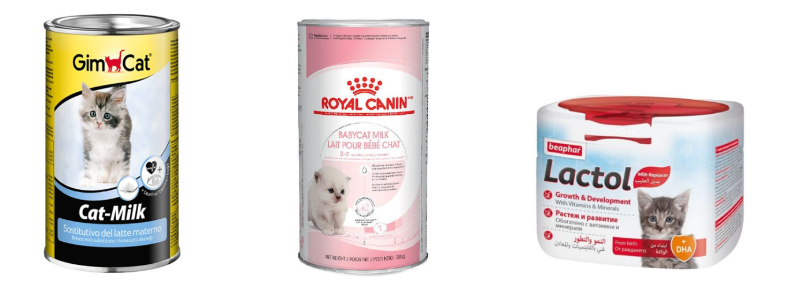
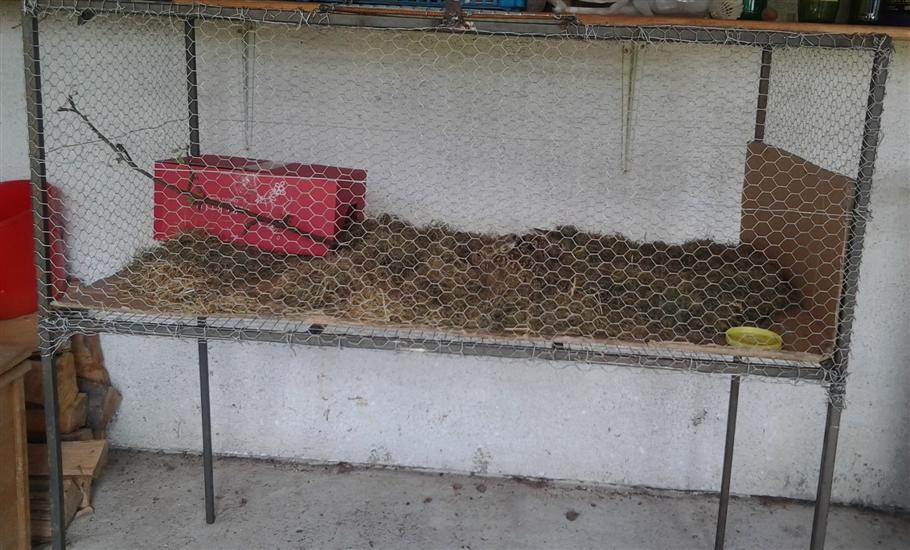
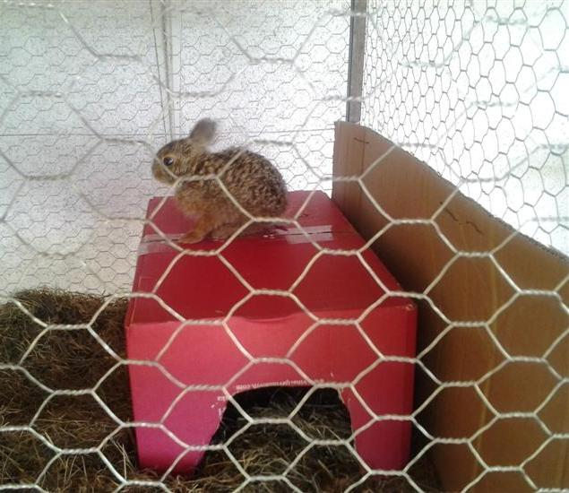

Što je potrebno za othranjivanje bebe divljeg zeca
Ako beba ima manje od 500 grama, ovisna je o mlijeku svoje majke i najčešće neće jesti ni travu, ni sjemenke, ni voće i povrće… Stoga odmah nabavite zamjensko mlijeko za mačiće (u prahu), probiotik kapsule i špricu (bez igle). Jedino tako će beba preživjeti.
Othranjivanje spašenog divljeg zeca nije nimalo lako, čak i za ljude s iskustvom. Iziskuje puno vremena, ali i novaca. Ako ispunite ovu prijavu pokušat ćemo vam u tome pomoći.
Zamjensko mlijeko za mačiće u prahu
Svaki veterinar i pet shop u Hrvatskoj može nabaviti zamjensko mlijeko od dobavljača, čak i u manjem selu. Alternativa je nabavka putem web shopa Zooplus-a, Pet centra, Zoo city-a i sl., koji narudžbe šalju poštom diljem Hrvatske. Pazite da zabunom ne uzmete mlijeko za odrasle mačke, poput Whiskas, Catessy ili Smilla! To mlijeko je samo poslastica za odrasle mačke, nemaju nikakvu hranjivu vrijednost. Općenito ne uzimajte nikakvo tekuće mlijeko, samo zamjensko mlijeko za mačiće u prahu.
U Srbiji se zamjensko mlijeko može nabaviti preko web shopa Pet marketa. U BiH i ostalim susjednim državama može biti teže doći do zamjenskog mlijeka. U tom slučaju nalaznicima savjetujemo da kontaktiraju poznanike iz većih gradova svoje države ili iz Hrvatske, da im poštom pošalju zamjensko mlijeko za mačiće ili štence.
Preporučene marke zamjenskog mlijeka za mačiće (tim redom) su: GimCat, Royal Canin, Beaphar, Dr Clauder's, Trixie, ali može im se davati i bilo koja druga marka - ovdje smo naveli najčešće. Najbolji je GimCat, a Trixie najmanje vole pa ga izbjegnite ako možete. Ako othranjujete 2 ili više zečića, preporučujemo da u Zooplus-u kupite pakovanje od 2 kg GimCat zamjenskog mlijeka za mačiće po povoljnijoj cijeni.
Može poslužiti i zamjensko mlijeko za štence, ali samo ako je zeko teži od 500 grama. Tada mu slobodno kupite Brit Care zamjensko mlijeko za štence, koje je dvostruko jeftinije od bilo kojeg zamjenskog mlijeka za mačiće. Isto vrijedi i za nalaznike koji si financijski ne mogu priuštiti mačje mlijeko - tada je Brit Care mlijeko za štence dobra zamjena.
Beba mora početi jesti u roku od 36 sati od pronalaska! Ako ne možete nabaviti zamjensko mlijeko za mačiće u roku od jednog dana, postupite prema uputama na ovoj stranici. Zeko mora početi jesti u roku od 36 sati od pronalaska. Ako odbija mlijeko i morate ga prisilno hraniti, pazite da mu mlijeko ne ode u pluća (hranite ga kap po kap!).
|  |
{kind=link}
Probiotik
Npr. Linex, Prolife ili Ferzym, koje možete nabaviti u ljekarni za ljude (bez recepta). Služi za obnavljanje crijevne flore, a vrlo je važan kada je beba jako mala ili prima lijekove (kao što je Biseptol). Linex i Prolife kapsule (s prahom) su najlakše za doziranje: 1/4 do 1/3 praha iz kapsule pri svakom hranjenju. Prah umiješajte u mlijeko, ali ne dok je još vruće, jer bi tako uništili dobre bakterije u probiotiku. U kasnijoj dobi (kada imaju preko 500 grama) možete im davati probiotik 1x dnevno.
Biseptol / Sulotrim / Bactrim sirup za djecu
Pokazao se najboljim protiv kokcidija, jer zečevi neke druge lijekove za životinje ne podnose. To je inače sirup za djecu, tako da ga možete kupiti u ljekarni za ljude. Izdaje se samo na recept, možete ga zatražiti od veterinara. No, ispunite li ovaj obrazac, udruga će vam sirup poslati poštom, ako je u mogućnosti. Terapiju ovim lijekom trebate provesti čak i kada zeko ne pokazuje znakove bolesti! (Sadržaj: 200 mg Sulfamethoxazol i 40 mg Trimethoprim).
Biseptol sirup i prObiotik je jako važno imati ako zec pokaže znakove bolesti, jer mu može spasiti život u zadnjem trenutku.
Immunoboost pasta za imunitet
Immunoboost je obvezan za bebe od 80 do cca 120 grama, jer su te bebe odvojene od majke s tek dan-dva starosti i bez njega gotovo sigurno neće preživjeti! Jedna pasta od 15 ml je dovoljna za 3 zečića. Može se nabaviti kod veterinara, ali i u većim pet shopovima, npr. Pet centar ili Pet home.
{kind=link}
{kind=link}
AD3E vitamin i suplement kalcija
Od prvog dana života zeko smije dobivati AD3E vitamin, a nešto kasnije i suplement kalcija za pravilan rast kostiju. Ako ispunite ovaj obrazac, udruga će vam suplement poslati poštom, ako je u mogućnosti. Nastojimo pomoći zečićima da ojačaju krhke noge i budu manje podložni fatalnim lomovima kostiju.
Paketić lijekova sadrži: Biseptol sirup, AD3E vitamin, suplement kalcija i detaljne upute za doziranje. Ovi lijekovi se daju u točno određenim količinama i razmacima, uz velik oprez!
 |
Šprice bez igle od 1 ml, 2 ml, 5 ml, 10 ml i 25 ml
Možete ih kupiti u ljekarni za ljude ili kod veterinara. Za najmanje bebe uzmite one od 1 ili 2 ml. Pomoću šprice od 1 ml moći ćete izmjeriti i točnu količinu Biseptola. Također, kod jako malih beba (težine oko 100 grama) šprice od 1 ml su bolje od dudica, jer možete prisilno hraniti bebu istiskujući lagano sadržaj šprice (kap po kap), čak i ako beba još ne zna sisati.
Kasnije prijeđite na šprice od 2 ml, a onda i na one od 5 i 10 ml, ali važno je da vam mlijeko iz šprice ne izleti prebrzo u zekina usta. Pazite da mlijeko ne završi u nosu umjesto u ustima, jer može doći do upale pluća! Kasnije je dobrodošla i velika zelena šprica marke Terumo (cca 25 ml).
Dudice
Samo za veće zečiće, koji već znaju sisati. Najbolje su dudice marke Beaphar. Pri kupnji pazite da vrh dudice nema kuglicu, jer im otežava hranjenje. Usta malih zečića su premala da bi u njih ušla dudica s kuglicom.
 |
{kind=link}
Kutija ili kavez
Za početak vam treba kutija u koju ćete smjestiti bebu divljeg zeca. Pazite, mogu skočiti neočekivano visoko pa kutiju pokrijte! Kada zeko poraste, trebat će vam kavez (poželjne dimenzije su 100 x 50 x 60 cm). Preporučujemo da kavez kupite preko oglasnika, ako je moguće.
Alternativa je da mu sami napravite gajbicu ili ogradite njegov kutak u vašem stanu dok ga othranjujete. Gajbicu koju vidite niže nalaznici su sami izradili od metalnih šipki i žice. Fotografije su objavljene uz dopuštenje nalaznika.
Pročitajte i česta pitanja o smještaju.
|  |  |
{kind=link}
{kind=link}
Stelja
Na dno kutije/kaveza nikako NE stavljajte pijesak! On bi im ušao u oči i usta. U najranijoj dobi zečića na dno postavite krpicu, a kad malo porastu poželjna je piljevina. Ako nemate piljevinu, možete staviti sloj novinskog papira prekriven sijenom ili slamom. Drvene pelete izbjegavajte, jer su valjkasti i po njima se skližu pa mogu strgati nogu (to vrijedi samo za divlje zečeve jer imaju krhke kosti, ne za druge životinje).
Divlje zečeve ne treba kupati, jer su jako čiste životinje. Za razliku od većine sisavaca, njihova koža i dlaka nemaju miris. Jedino što ima miris su njihova kakica i mokraća. Stoga kutiju/kavez držite urednim i čistite svaki dan. Ako imate više zečića, čistite 2 puta dnevno.
Ostalo
Ako je zeko teži od 250 grama, osim zamjenskog mlijeka za mačiće trebat će vam i ostala hrana: sijeno, trava, povrće, voće, sjemenke, grančice... Trebat će vam i zdjelice za mlijeko, vodu i sjemenke.